The oh-so-proper yachting press would have you believe that you must spend at least $2,000 to own a twenty-foot cruising sailboat. Hogwash! My lady and I built and outfitted Hina for less than $300, and $90 of that was spent on a suit of used sails alone!
Instead of using costly marine hardware, we made our own fittings from scrounged materials. We combined efficient, modern design concepts with older "tried and true" methods. At the start, we had only limited woodworking skills and a few hand tools, no plans and no blueprints to follow. We relied simply on intuition plus what little we could learn about the boat designs of faraway times and places.
The result: a crisply performing vessel that far surpassed our highest hopes. Hina sails beautifully! On a 2-1/2 month, 400-mile cruise around upper Lake Michigan, under all kinds of conditions, she kept us safe, dry and reasonably comfortable. In heavy weather, she took five and six-foot waves easily and her classic lines drew admirers at every port.
Because she was such a success, and because I'd like to aid others who've dreamed of living on the water, I've drawn up this description of the Hina and how we built her.
Despite the cultural diversity on our planet, certain practices in the arts of seamanship and boat design have remained nearly universal. The sea presents the same circumstances to all, and people who choose to live and work on the water survive by learning to handle them.
In gale force winds, for example, waves roll high and travel fast, frequently breaking into white caps and releasing tons of force. To avoid being crushed by these breakers, small boat skippers keep the sharp ends of their craft pointed into the surf, so no broad surfaces are exposed to its power. Everywhere, seafaring people have built boats with high, pointed bows which offer little resistance to heavy oncoming seas and which tend to lift boats over swells.
The dory is no exception to this rule. Developed by offshore fishermen of the North Atlantic, this little ship is a "child of adversity". Many fishermen have ridden out blustering gales in sixteen-footers, and a few have crossed entire oceans in them.
Like many good things from an age when men lived closer to nature, the dory has become rare, a victim of automation in the fishing industry. Yachting enthusiasts have ignored it in favor of competitive fiberglass racing styles. For them, a craft whose angular hull is best suited to wood construction and a modest sail area is of no interest; it's not sleek enough.
But, for a small boatman, the reasons for building a dory today are the same as they were in the last century: She's easy and cheap to build, yet as rugged and seaworthy as any small boat can be. Anyone can go to sea in such a vessel without excessive risk to life and limb.
Now, here's how we built our ship. The drawings are kinda funky, but if you've been waiting to put a boat together, they're enough to get you started.
The dory is formed from four panels of wood: two sides, a bottom and a transom. Once assembled, they form a rigid structure which needs little framing.
Each side is fabricated from a 4x10-foot section of 1/2-inch plywood sawn in half lengthwise and butt-jointed together end to end (see Figure 2). Four-by-eight-foot pieces will work as well, but require an extra butt joint.
To loft the curved bottom line, lay out one side on a flat surface. Drive in nails at points A, B and C (Fig. 3). Then bend a long, straight-grained, thin piece of wood around these nails and draw the bottom line as shown. Once the line is marked, cut out one side and use it as a pattern for the other.
After cutting out the sides, butt-join them together using flathead bolts and glue. (We like Weldwood Recorcinal resin. It's expensive, but very good. Follow directions.) Don't skimp on either, because the strength of this joint is crucial to the boat's design.
It must accept all the strain of slapping over waves and plowing into surf. In fact, the joining plate shown in the diagram (Fig. 4) probably represents the inside limit on size. You could easily extend yours to reach all the way between the two nearest ribs. The bigger the plate, the firmer the joint. Next, fasten a beveled 1x2 chine along the inside bottom of each side. (Remember, you'll have a "right" and a "left"!) Each chine is beveled so the sides will slope up and outward from the floor at a "flair angle." Then, 1x1 ribs can be joined to the chines as shown. The transom is also pictured here, but should not yet be fixed in place.
Now attach the bowstem to one side as pictured (Fig. 5). The stem is a 40-inch-long 2x3 that is beveled on both sides at 25°. This diagram shows a cutaway view, looking down on the plywood frame at the bow.
In order to shape the hull, you'll need a center frame around which you can bend the sides (Fig. 6). This frame should be 48 inches wide at the top, including the thicknesses of the two sideboards. At the lower end of the guide, fix a substantially longer piece of wood. This will be used to maintain the angle of flair during construction. C-clamps are used all around: on the top for firm clamping action and on the bottom to permit easy adjustment of flair as the hull is trued.
Bending the sides together is a little like stringing two 20-foot longbows at once (Fig. 7). It helps to soak the plywood and keep it wet while it's being curved. Luckily, when Hina was at this stage, we got four days of steady rain.
Our shaping tool was a "twist-pull" made with some strong twine and eye screws (Fig. 8). Keeping them wet, we took a few days to curve the sides a few inches at a time. Patience is the cardinal virtue here. Don't force the wood.
The transom fits into the ship's stem. It's beveled horizontally on both edges at a 22° angle to mate smoothly with the ends of the sideboards (Fig. 9). It also tapers vertically to match the angles of flair of the boat's sides. The transom is simply made of boards fitted over a four-piece frame. Its top is rounded and designed to stand up above the sides, like a backboard (Fig. 10). The fit at the base and along the ridge of the chines is important and should be made with some care. Any excess should be trimmed until mating surfaces are flush. The transom is fastened to the sides in much the same manner as the bowstem.
For final fitting at the bow, use triangular shims lightly nailed to the frame to keep the C-clamp from sliding off (Fig 11). Elsewhere, clamps alone should do. And, for the second time, a note on glue: We used Weldwood Recorcinal resin. It's expensive, but very good. Follow the instructions that come with it.
Once stretched and fastened, the sides will tend to crimp at the point where they bend around the center frame. To prevent this, drive 2x2 cross members toward the bow and stern. Hina has four such supports, the two centermost of which lie about two feet from midship (Fig. 12). Besides shaping the hull, these struts, like the ribs, function to anchor internal framing to the boat's exterior. Since the two center cross members will hold the ballast keel (it's heavy!), they should be of oak.
(EDITOR'S NOTE:A carpenter we talked to made on alternate suggestion for the crossbeams: He felt that 2x4s could be notched so as to fit around the chines rather than just against them. This would allow the struts to be fastened to the hull, the chines and the ribs, greatly increasing their staying power, not to mention that 2x4s are sturdier than 2x2s to start with.)
To test for symmetry, stretch twine along the boat's axis and measure distances from either side to the line with a yardstick (Fig. 13). They should always be equal. Asymmetry can be corrected by adjusting the crossmembers and by twist-pulling the frame with a rope and stick.
After they've been correctly positioned and checked, struts can be lightly nailed into place to prevent shifting. (EDITOR'S NOTE: In our carpenter's alternate method, you would nail not only from the hull into the crossbeam, but also from the lip of the 2x4 into the chine, and from the rib, which isn't pictured, into the beam (Fig. 14).)
In this kind of vessel design, the bottom plays an important structural role. Its installation is not difficult, but should be done carefully to assure maximum strength and watertight joints (Fig. 15). The chine bevel should ensure a perfectly smooth fit between the sides and the floor. Regularity of surface along this junction is crucial. One way to make sure the bevels on both sides are equal is to rip the chines from a wider board. Or, if you had one, you could use a table saw. No matter how carefully you cut, though, some hand planing maybe necessary. We used a Stanley hand planer with good results.
You can tell if you need to plane by laying a straight edge across the chines and sides. It should fit snugly against all surfaces (Fig. 16).
Excess wood can be removed with a rasp. Check your work frequently with a straightedge. This joint is the backbone of your boat, so take the time to do it right (Fig. 17).
Do most of your planing in a lengthwise direction to keep the bottom line smooth and free from dips. The bottoms of the bowstem, transom and crossmembers should also fit flush against the straightedge (Fig. 18).
Lie the 4x8 plywood sheets over the hull and draw an outline where they hit the bottom (Fig. 19).
When cutting the bottom, give yourself a little extra (Fig. 20). Excess can be easily removed with a rasp or belt sander after the underside has been fastened in position. Butt-join the bottom pieces as you did the sides. Then, attach the ship's belly using plenty of glue and fasteners, preferably screws of brass, galvanized steel or other metal coated with a saltwater resistant substance. Fasten it to the transom and struts as well as the chines (Fig. 20).
You can further finish and waterproof this seam by gluing and nailing a small trim piece along the outside (Fig. 21).
This is it! Turn her over and ... finis! The structure of your boat is basically complete. At this point it won't go anywhere, but it will float. The sides, of course, will retain some flex until internal buttressing is installed, so it may be a good idea to keep the center frame in place until you've gotten your ship upright. Once flipped onto her belly, the vessel will collect rain, and you'll have your first genuine bilge water right in your own backyard!
(Next month: Inside hull work, the keel, the mast and rigging!)
|
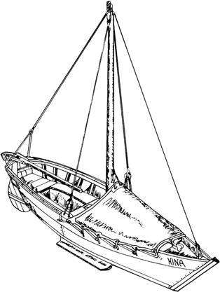 |
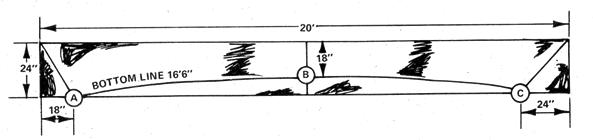 Figure 2. Each side is fabricated from a 4x10-foot section of 1/2-inch plywood sawn in half lengthwise and butt-jointed together end to end. |
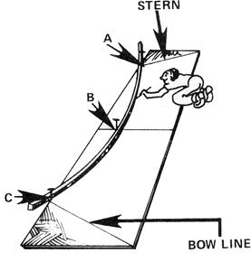 Figure 3. To loft the curved bottom line, lay out one side on a flat surface. Drive in nails at points A, B and C. Then bend a long, straight-grained, thin piece of wood around these nails and draw the bottom line as shown. Once the line is marked, cut out one side and use it as a pattern for the other. |
|
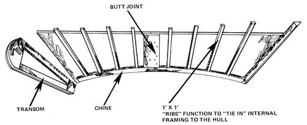 Figure 4. It must accept all the strain of slapping over waves and plowing into surf. In fact, the joining plate shown in the diagram probably represents the inside limit on size. You could easily extend yours to reach all the way between the two nearest ribs. The bigger the plate, the firmer the joint. Next, fasten a beveled 1x2 chine along the inside bottom of each side. (Remember, you'll have a "right" and a "left"!) Each chine is beveled so the sides will slope up and outward from the floor at a "flair angle." Then, 1x1 ribs can be joined to the chines as shown. The transom is also pictured here, but should not yet be fixed in place. |
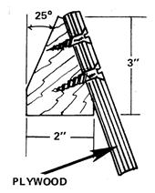 Figure 5. Now attach the bowstem to one side as pictured. The stem is a 40-inch-long 2x3 that is beveled on both sides at 25°. This diagram shows a cutaway view, looking down on the plywood frame at the bow. |
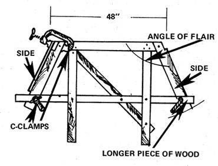 Figure 15. In this kind of vessel design, the bottom plays an important structural role. Its installation is not difficult, but should be done carefully to assure maximum strength and watertight joints. The chine bevel should ensure a perfectly smooth fit between the sides and the floor. Regularity of surface along this junction is crucial. One way to make sure the bevels on both sides are equal is to rip the chines from a wider board. |
|
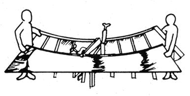 Figure 7. Bending the sides together is a little like stringing two 20-foot longbows at once. It helps to soak the plywood and keep it wet while it's being curved. |
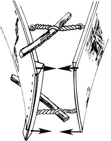 Figure 8. Our shaping tool was a "twist-pull" made with some strong twine and eye screws. |
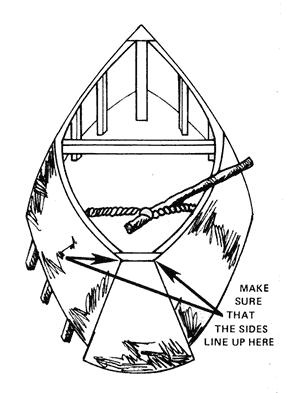 Figure 9. The transom fits into the ship's stem. It's beveled horizontally on both edges at a 22° angle to mate smoothly with the ends of the sideboards. It also tapers vertically to match the angles of flair of the boat's sides. |
|
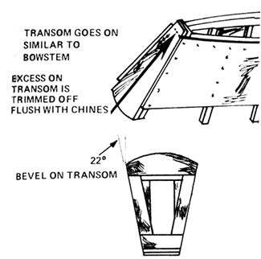 Figure 10. The transom is simply made of boards fitted over a four-piece frame. Its top is rounded and designed to stand up above the sides, like a backboard. |
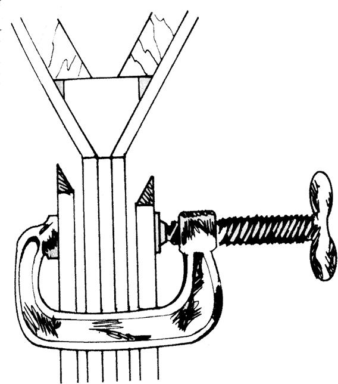 Figure 11. For final fitting at the bow, use triangular shims lightly nailed to the frame to keep the C-clamp from sliding off. |
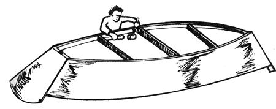 Figure 12. Once stretched and fastened, the sides will tend to crimp at the point where they bend around the center frame. To prevent this, drive 2x2 cross members toward the bow and stern. Hina has four such supports, the two centermost of which lie about two feet from midship. |
|
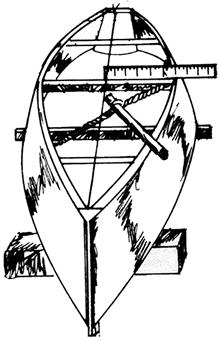 Figure 13. To test for symmetry, stretch twine along the boat's axis and measure distances from either side to the line with a yardstick. |
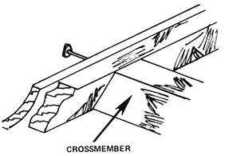 Figure 14. EDITOR'S NOTE: In our carpenter's alternate method, you would nail not only from the hull into the crossbeam, but also from the lip of the 2x4 into the chine, and from the rib, which isn't pictured, into the beam. |
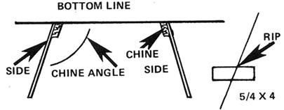 |
|
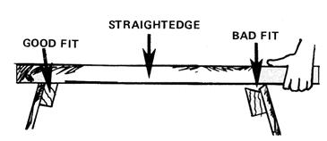 Figure 16. You can tell if you need to plane by laying a straight edge across the chines and sides. It should fit snugly against all surfaces. |
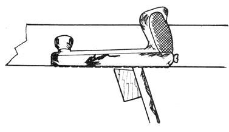 Figure 17. Excess wood can be removed with a rasp. Check your work frequently with a straightedge. This joint is the backbone of your boat, so take the time to do it right. |
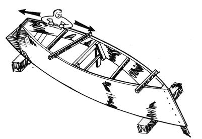 Figure 18. The bottoms of the bowstem, transom and crossmembers should also fit flush against the straightedge. |
|
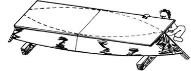 Figure 19. Lie the 4x8 plywood sheets over the hull and draw an outline where they hit the bottom. |
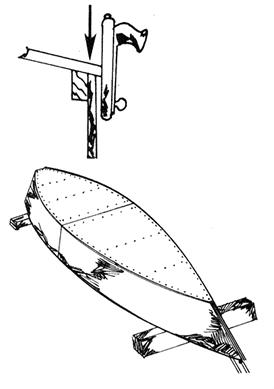 Figure 20. When cutting the bottom, give yourself a little extra. Excess can be easily removed with a rasp or belt sander after the underside has been fastened in position. Butt-join the bottom pieces as you did the sides. Then, attach the ship's belly using plenty of glue and fasteners, preferably screws of brass, galvanized steel or other metal coated with a saltwater resistant substance. Fasten it to the transom and struts as well as the chines. |
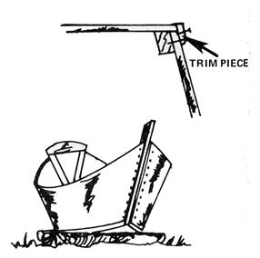 Figure 21. You can further finish and waterproof this seam by gluing and nailing a small trim piece along the outside (Fig. 21). This is it! Turn her over and ... finis! The structure of your boat is basically complete. At this point it won't go anywhere, but it will float. The sides, of course, will retain some flex until internal buttressing is installed, so it may be a good idea to keep the center frame in place until you've gotten your ship upright. Once flipped onto her belly, the vessel will collect rain, and you'll have your first genuine bilge water right in your own backyard! |
|
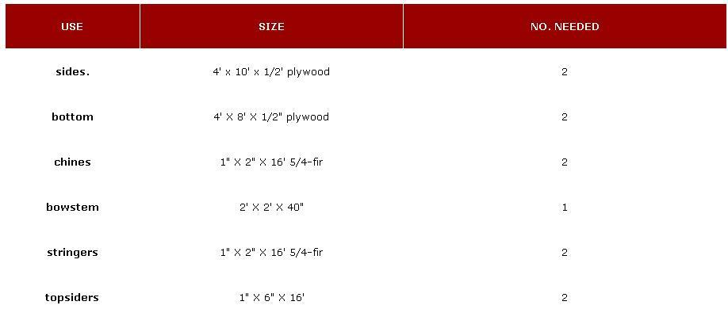 Hina is a floating backpakc that will carry two people as far away as they wish to go. As with any backpack, the lighter the better. So, we built her from sturdy, but not heavy, woods. Our basic hull materials included those listed above. Plywood should be waterproof, which means laminated together with glue that won't disentigrate at sea. And the 5/4-fir specified here is a rough lumber measure which assures you of a true one-inch thickness on the finished board. If you ordered simply 1x2 fir, you'd end up with a planed piece of lumber measuring only 11/16 x 1-5/8. You want the full inch. Just about everything else that went in Hina consisted of short, scroungeable lengths. Such scavenging not only saves money, but draws you into the design process as you adapt your plans to utilize what's available. |
|
|